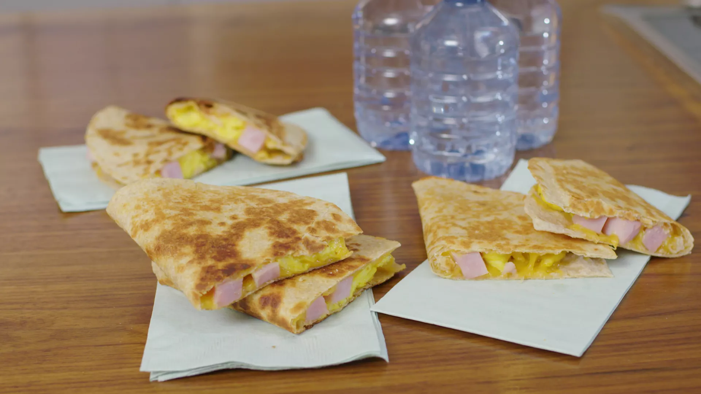

Quesadillas

- Ham, Egg, and Cheese Quesadillas -
These ham, egg, and cheese quesadillas are a delightful alternative to breakfast burritos and are filled with flavor-packed protein. The crunchy crust makes for the perfect bite and package for the rich, creamy egg filling and flavorful ham bites. This perfect portable breakfast will keep the kids full and energized to perform well all school day.
Ingredients
- 8 large eggs
- 1 tablespoon water
- ½ teaspoon salt
- ½ teaspoon pepper
- 3 tablespoons butter, softened, divided
- 6 (8 inch) whole wheat tortillas
- 2 cups shredded Cheddar cheese
- 1 (8 ounce) package Smithfield® Cubed Ham
How to make Ham, Egg, and Cheese Quesadillas
- Whisk together eggs, water, salt, and pepper in a medium bowl until well blended.
- Melt 1 tablespoon butter in a medium nonstick skillet over medium heat. Cook eggs, stirring frequently, until scrambled to desired consistency. Transfer to a bowl and set aside.
- Spread 1 teaspoon butter over 1 tortilla and place butter-side down in the same skillet over medium heat. Sprinkle 1/3 cup cheese over entire tortilla. Add 1/2 cup scrambled egg and 1/3 cup ham to one half. Cook until cheese is melted, about 3 minutes. Fold cheese side over egg-ham filling, then flip quesadilla. Cook until golden and toasted, about 2 more minutes. Cut into 2 or 3 pieces. Repeat this step to make 5 more quesadillas.
To Bake a Large Batch in the Oven:
Preheat the oven to 375 degrees F (190 degrees C). Butter the outside of each tortilla with 1 teaspoon butter. Cover 1/2 of each tortilla with cheese, scrambled egg, ham, and another layer of cheese, in that order. Fold each quesadilla in half and arrange on a rimmed baking sheet. Bake in the preheated oven for 8 minutes, flipping halfway through.
HOME